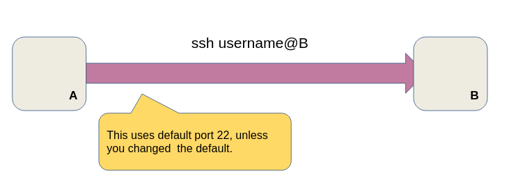

If you regularly work with remote, screenless machines, you probably regularly work with SSH too. SSH is great to access a machine, but what if it sits behind a router or firewall and you can’t change the rules? That’s what this is article is about: reverse tunnels!
The typical SSH connection
The simplest scenario is a direct connection between host A and B. Let’s say A wants to SSH into B. You simply type ssh username@B in a terminal in host A.

Simple enough. This is just a normal SSH connection. Let’s get into tunnels.
The forward tunnel
You use tunnels when you want to forward connections in specific ports. Let’s say A wants to access a Jupyter Notebook server running on host B, on port 8888, and we want to be able to access it in host A as if it were running locally, on the same port. We can use a tunnel, that will forward all connections in port 8888 of host A to port 8888 of host B.
If you go to a browser in host A and access localhost:8888, sure enough, you’d get the Jupyter Notebook page (that is served on host B).

But what if host B sits behind a router or firewall? Well, no problem, you just need to create a port forwarding rule that ensures that a connection to routerB will be forwarded to the SSH port of host B. Let’s say port 22 (default SSH port) of routerB is being forwarded to port 22 of host B.


If B sits behind a router, you just need to make sure there is a port forwarding rule from port 22 of routerB to port 22 of B. But what if you can’t configure the router or firewall?

The reverse tunnel
That’s where reverse tunnels enter the picture. You can’t access host B with a SSH connection, because B is fenced. There is no way in. But, if you have direct access to it, if you can directly configure it (e.g. manually), then you can still make the connection work by using a reverse tunnel. We still have the same scenario, that is, we want A to be able to access, locally, the Jupyter Notebook running in host B (this could be any service, really).
Before, we used the -L option, which forwarded local connection on port 8888 of A to port 8888 of B. We still want to do that, but now the SSH connection will start from host B. If we used -L again, we’d be forwarding connections on port 8888 of B to port 8888 of A, exactly the opposite of what we want. We need to reverse this, by using -R option instead. It works exactly as -L, but in a different direction.

Note that the SSH connection is initiated from B to A, but the forwarded connections inside the tunnel are from A to B. Notice how the purple arrow (initial SSH connection) is now going leftwards, but the blue arrow (the forwarding tunnel) is still going towards the right.
With this, you’re done. You can, once again, access the Jupyter Notebook in port 8888 of localhost in host A and it will be served pages from host B (port 8888).
SSH into a firewalled host with a reverse tunnel
Let’s forget about Jupyter Notebooks for now. The more common case is just making a SSH connection into a firewalled host. Using a reverse tunnel, it’s easy. Let’s break it apart:
- B initiates a SSH connection to A:
ssh anotherUser@A - This is the base command. We then add the reverse tunnel on top of that, to forward connection on port X of A (let’s give it a number, say 12345) to port 22 of B. B actually executes
ssh -R 12345:[localhost](http://localhost):22 anotherUser@A. Now A can access port 22 of localhost of host B if it makes connections on port 12345 on localhost of A (the diagram below clarafies this). - Then you can just type
ssh -p 12345 username@localhostto have an interactive SSH session in a terminal in host A. This will initiate a SSH connection in port 12345 of localhost, which is forwarded, by the reverse tunnel, to port 22 of host B, creating the desired connection.
With this inceptionesque scenario, we have a SSH connection (blue arrow, initiated by A) inside another SSH connection (big pink arrow, initiated by B).

We’ve now covered the typical ways both normal and reverse tunnels are used. You can use this knowledge to have communication rolling even when you have to deal with pesky firewalls and inaccessible routers.
A convoluted, but common setup, is having a router sitting between A and the internet (check the diagram below). Let’s say we have a routerA that forwards port 6789 to port 22 (SSH’s default port) of host A. The goal is still the same: have host A access the firewalled host B. This is not really that much more complex, but we have to “divide and conquer” the problem, or layer it:
- Host B must create a SSH connection to host A. This was done with
ssh anotherUser@A. - But now, A is behind routerA and port 6789 of routerA is forwarding to port 22 of A, so we have to specify that port in the original SSH connection:
ssh anotherUser@routerA -p 6789. Since port 6789 of routerA is forwarding to port 22 of A, we get our connection. - B must create a reverse tunnel. This part we already covered:
ssh -R 12345:localhost:22 anotherUser@routerA -p 6789. - Finally, host A connects to host B as before,
ssh -p 12345 username@localhost

What if we also can’t configure routerA? That means no port forwarding is in place and neither A nor B can receive connections! The only way out of that one is to make a blood sacrifice. Chickens 🐔 usually do it. Goats 🐐 if you want to get fancy. Or, perhaps, with a third host, with tunnels initiated in A and B… That’s homework material!
Sources
https://unix.stackexchange.com/questions/46235/how-does-reverse-ssh-tunneling-work